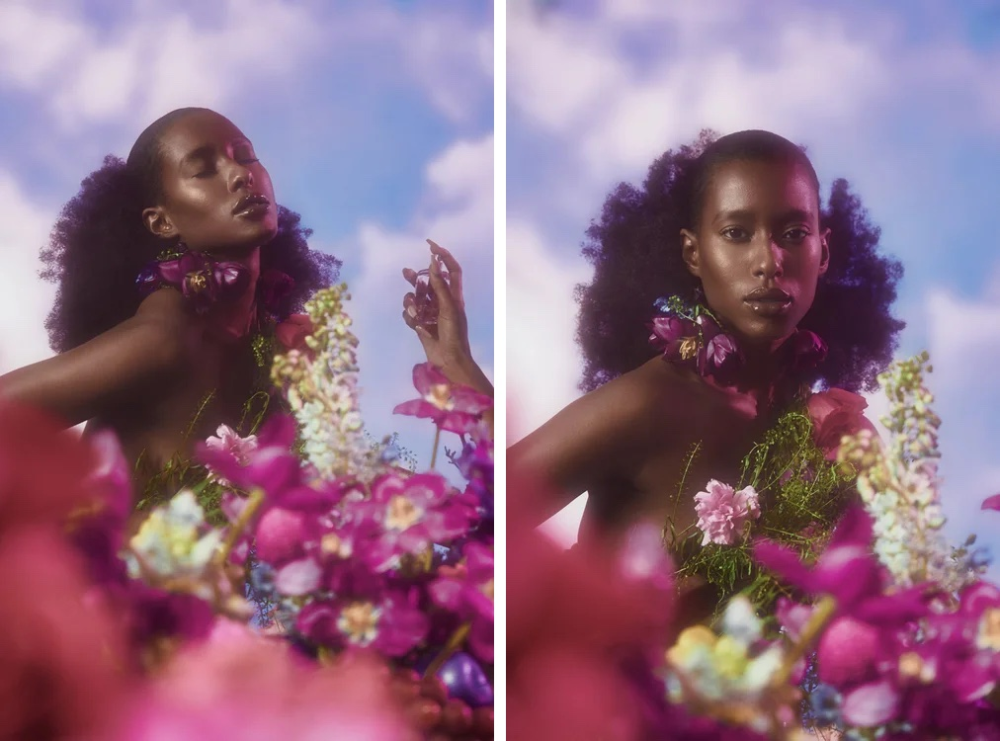
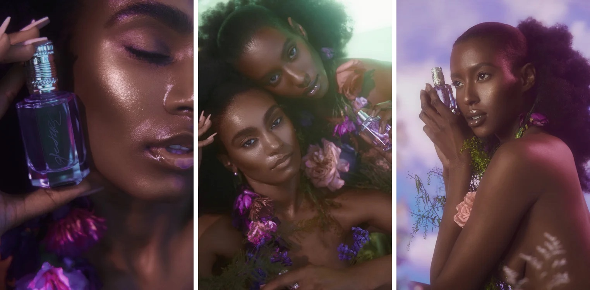

Project 20 — Commercial Film / Creative Direction, Production & Brand Development
Future / Sinsational Perfume
About the project
PAZL® directed, wrote and produced the commercial for Sinsational, Future's perfume: a garden in the clouds, built in camera, with campaign stills shot on set.
From album covers to music videos and commercials, translating a client's vision into compelling visuals is the foundation of every campaign.


Credits
- Direction & production
- PAZL®
- Creative direction
- Fred Saint Foster
- Artist
- Future
- Photography
- Christian Cody